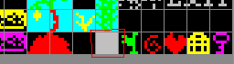

Configuración de opciones de pantalla
A partir de v3 de ZX Infinity se pueden asignar atributos a las pantallas, entre ellos la música elegida.
Recuerda que para que esto funcione debes tener activa la opciçon screenAttributes en los atributos de tu juego.
Una vez activa esta opción ya podrás añadir un punto (point) por cada pantalla tipo/class screen_attributes y configurarle al menos un atributo de los aquí indicados:
Color de fondo
El atributo background te permite indicar al motor que la pantalla use este color como fondo, en lugar del establecido en los atributos generales de tu juego. Con esto se soluciona un problema de v2 con dropTile que sólo funcionaba cuando no tenías un tile establecido en esa parte. Además te ahorras tener que poner un tile de color dentro de tu colección para los distintos entornos que tengas. Por ejemplo, esto se puede usar para establecer un fondo Azul si estás al aire libre y un fondo oscuro con la tinta roja si estás en una caverna. También puedes simular entornos más oscuros conforme vas profundizando en una caverna. Se puede combinar con el atributo tile.
Tile de fondo
El atributo tile hace la misma función que background sólo que altera el tile de fondo (el tile 0 vacío) por el aquí indicado. Por ejemplo, si tu juego tiene distintos entornos, entre ellos edificios, puedes usar un tile de pared con distintos colores para cada edificio. ¡¡¡Tienes un tile con distintos colores sin usar espacio en tus tiles!!! Se debe combinar con el atributo background.
Dark mode
El atributo dark te permite indicar al motor que la pantalla esté oscura al entrar en ella. Junto con los nuevos tiles de interruptor podrás hacer que esto cambie durante tu estancia en la pantalla
Cabe recordar que el juego de tiles oscuros se encuentra en el fichero tiles_dark.zxp. La lógica de sólidos, etc etc se mantiene igual. Por lo que si tienes un tile sólido en tiles.zxp, tendrás que tener el mismo tile sólido en tiles_dark.zxp pero no tiene por qué pintarse igual. Por otro lado, aunque se llame dark puedes simplemente poner otros colores y ocultar algunos tiles para simular otras cosas. Por ejemplo, puedes usarlo para simular que el jugador entra en una habitación con una luz de neón.
HUD Alternativo
El atributo hud2 te permite indicar al motor que la pantalla use un HUD alternativo en esa pantalla. El scr asociado que debe existir es hud2.scr. Por defecto se usa el HUD normal de siempre.
Pantalla en modo cenital (side mode)
Para los juegos en vista lateral ahora se puede indicar que una pantalla funcione en modo cenital. Para ello se debe usar el atributo terrain (modo terreno).
En estas pantallas no se puede saltar y los tiles de escalera no tienen efecto. Hay que tener en cuenta de no introducir plataformas en este modo pues no cambian su comportamiento y puede quedar raro
Música in-game por pantallas
El atributo music permite definir qué música cargar al entrar en esa pantalla
Configuración original a tener en cuenta
Ten en cuenta la configuración original antes de continuar aquí.
Músicas disponibles
Aquí podrás configurar 1 cambio de música por pantalla, no haciendo el cambio si ya se está reproduciendo la misma canción.
Por otro lado, se reproducirán las canciones tantas veces como cambien, permitiendo asignar canciones por ambientes y no por progreso.
Por ejemplo: entras a una cueva y suena la canción de la cueva, en cuanto sales vuelves a la canción de la aventura principal.
Por último pero no menos importante, en infinity puedes indicar que te ponga cualquiera de las canciones que tienes en tu juego (repetir es ahorrar).
Tienes disponibles las siguientes opciones:
-
music o music1 tema principal de la aventura
-
music2 tema auxiliar 1
-
music3 tema auxiliar 2
-
title canción del título del juego (que puede servir para el juego también)
-
ending canción para cuando ganas
-
gameover tema para cuando pierdes o para cuando no te gusta la pantalla
-
no_music desactiva la música en el juego hasta que se llegue a una pantalla con música
Pantalla de destino para teleport
El atributo teleportTo te permite indicar a qué pantalla se teletransportará el jugador cuando entre en un portal.
NOTA: Para que funcione tienes que habilitar la opción teleportEnabled en las opciones genéricas
Las pantallas se identifican por su número de pantalla (empezando por 1) de izquierda a derecha y de arriba a abajo en Tiled. Por ejemplo, si tienes un mapa de 5x5, la pantalla 1 es la primera de la izquierda/arriba y la pantalla 25 es la última de la derecha/abajo.
Activación
Cuando el jugador entra en un tile teleport y pulsa disparo, se teletransportará a la pantalla indicada en el atributo teleportTo.
El tile teleport es el siguiente:

Hay que tener en cuenta que la validación se hace desde el centro del player por lo que se recomienda poner como mínimo un conjunto de 2x2 tiles para que se detecte bien.
Funcionamiento
Para que funcione el teleport se deben poner los tiles teleport en Tiled. Además se debe configurar el atributo teleportTo en la pantalla afectada. Dependiendo de lo configurado en las pantallas afectadas, el teleport será de un tipo u otro.
SOLO SE PUEDE PONER UN PORTAL POR PANTALLA.
Los teleport pueden ser de varios tipos:
-
Bidreccional El jugador puede entrar por cualquier lado y saldrá por el lado opuesto. Cada pantalla contiene tiles de teleport y se debe configurar el atributo teleportTo en ambas pantallas apuntando la una a la otra.
-
Unidireccional El jugador puede entrar por un lado y saldrá por el lado opuesto. Sólo una pantalla apunta a la otra.
Ahora pueden pasar 2 cosas según configures:
-
Si pones tiles de teleport en la pantalla de destino el jugador empezará ahí la nueva pantalla PERO los tiles no se verán. De hecho, NUNCA se verán los tiles de teleport en una pantalla si no tiene teleportTo configurado.
-
Si NO pones tiles de teleport en la pantalla de destino el jugador aparecerá en la pantalla de destino PERO en la misma posición que estaba en la pantalla de origen. Por lo que si no pones tiles de teleport en la pantalla de destino ten cuidado de no tapar la entrada con tiles de pared o similares.
-
Unidireccional múltiple El jugador entraría por la pantalla 1 y saldría por la pantalla 2, pero al entrar por la pantalla 2 saldría por la pantalla 3. Y así sucesivamente. Para esta configuración simplemente se debe poner el teleportTo de cada portal a la siguiente, no estás obligado a poner siempre la misma dirección de entrada y salida.